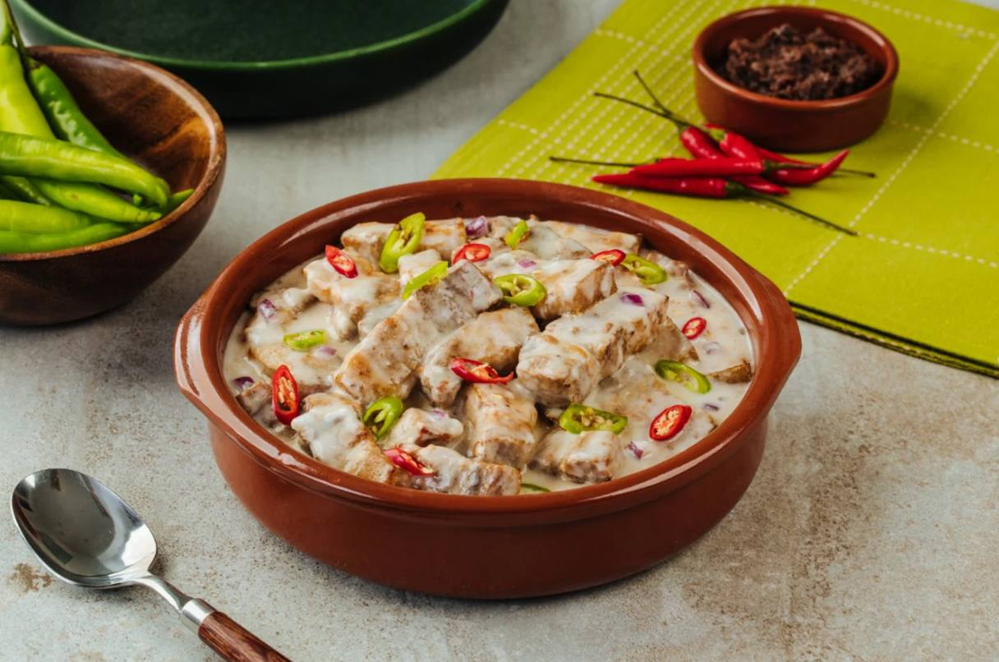

Crispy Sisig is a popular Filipino dish known for its bold, savory flavors and crunchy texture. It's a dish made from pork (usually parts like the face, ears, and sometimes liver) that's been simmered, chopped, and then crisped up to perfection. Sisig is typically served sizzling on a hot plate and is often enjoyed as a snack, appetizer, or even as a main course.

Bicol Express
Ingredients
1 tablespoon cooking oil, as needed
1 pc onion, chopped
8 cloves garlic, chopped
2 tablespoons shrimp paste (not sweet)
1/2 kilogram pork, cut into thin strips
1 (40 g) pack Knorr Ginataang Gulay Mix dissolved in 1 1/2 cup of water
6 pcs green chillies, sliced
Directions
In a medium sized pot, get it nice and hot on medium-high heat. When hot enough, pour in a little oil and throw in the onions, garlic, ginger and shrimp paste.
Mash the shrimp paste and sauté the vegetables until you can smell the lovely aroma from the combined ingredients.
It's time to add the pork. Allow the pork to cook for just a minute together with the aromatics (onions, garlic and ginger) to remove the gamey taste of the meat.
You may now pour the dissolved Knorr Complete Recipe Mix Ginataang Gulay and bring this to a boil. Adjust your heat to low and cook this to simmer before adding the chilies. Stir once in a while then finish by cooking the pork until tender. Served this dish hot.